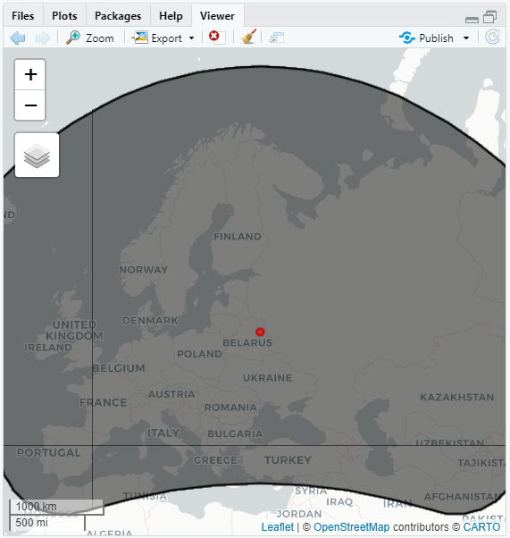

Geometry
This section requires the next libraries:
Geometry Overview
Earth Engine handles vector data with the Geometry type. The GeoJSON spec describes in detail the type of geometries supported by Earth Engine, including Point (a list of coordinates in some projection), LineString (a list of points), LinearRing (a closed LineString), and Polygon (a list of LinearRings where the first is a shell and subsequent rings are holes). Earth Engine also supports MultiPoint, MultiLineString, and MultiPolygon. The GeoJSON GeometryCollection is also supported, although it has the name MultiGeometry within Earth Engine.
Creating Geometry objects
To create a Geometry programmatically, provide the constructor with the proper list(s) of coordinates. For example:
point <- ee$Geometry$Point(c(1.5, 1.5))
lineString <- ee$Geometry$LineString(
c(c(-35, -10), c(35, -10), c(35, 10), c(-35, 10))
)
linearRing <- ee$Geometry$LinearRing(
c(c(-35, -10), c(35, -10), c(35, 10), c(-35, 10), c(-35, -10))
)
rectangle <- ee$Geometry$Rectangle(c(-40, -20, 40, 20))
polygon <- ee$Geometry$Polygon(c(
c(c(-5, 40), c(65, 40), c(65, 60), c(-5, 60), c(-5, 60))
))In the previous examples, note that the distinction between a LineString and a LinearRing is that the LinearRing is “closed” by having the same coordinate at both the start and end of the list.
An individual Geometry may consist of multiple geometries. To break a multi-part Geometry into its constituent geometries, use geometry$geometries(). For example:
# Create a multi-part feature.
multiPoint <- ee$Geometry$MultiPoint(c(c(-121.68, 39.91), c(-97.38, 40.34)))
# Get the individual geometries as a list.
geometries <- multiPoint$geometries()
# Get each individual geometry from the list and print it.
pt1 <- geometries$get(0)
pt2 <- geometries$get(1)
paste0('Point 1', ee$Geometry$getInfo(pt1))
paste0('Point 2', ee$Geometry$getInfo(pt2))Geodesic vs. Planar Geometries
A geometry created in Earth Engine is either geodesic (i.e. edges are the shortest path on the surface of a sphere) or planar (i.e. edges are the shortest path in a 2-D Cartesian plane). No one planar coordinate system is suitable for global collections of features, so Earth Engine’s geometry constructors build geodesic geometries by default. To make a planar geometry, constructors have a geodesic parameter that can be set to FALSE:
planarPolygon <- ee$Geometry(polygon, NULL, FALSE)Figure 1 shows the difference between the default geodesic polygon and the result of converting the polygon to a planar representation.

Figure 1. A geodesic polygon (red) and a planar polygon (black).
You can convert between geodesic and planar geometries using the ‘ee$Geometry’ constructor.
Geometry Visualization and Information
Visualizing geometries
To visualize a geometry, add it to the map. For example:
# Create a geodesic polygon.
polygon <- ee$Geometry$Polygon(c(
c(c(-5, 40), c(65, 40), c(65, 60), c(-5, 60), c(-5, 60))
))
# Create a planar polygon.
planarPolygon <- ee$Geometry(polygon, NULL, FALSE)
# Display the polygons by adding them to the map.
Map$centerObject(polygon)
Map$addLayer(polygon, list(color<- 'FF0000'), 'geodesic polygon')
Map$addLayer(planarPolygon, list(color<- '000000'), 'planar polygon')For more on visualizing, see Feature and FeatureCollection Visualization.
Geometry information and metadata
To view information about a geometry, print it. To access the information programmatically, Earth Engine provides several methods. For example, to get information about the polygon created previously, use:
print(paste0("Polygon printout: ", ee$Geometry$getInfo(polygon)))
# Print polygon area in square kilometers.
print(paste0("Polygon area: ", ee$Geometry$getInfo(polygon$area()$divide(1000 * 1000))))
# Print polygon perimeter length in kilometers.
print(paste0("Polygon perimeter: ", ee$Geometry$getInfo(polygon$perimeter()$divide(1000))))
# Print the geometry as a GeoJSON string.
print(paste0("Polygon GeoJSON: ", ee$Geometry$getInfo(polygon$toGeoJSONString())))
# Print the GeoJSON 'type'.
print(paste0("Geometry type: ", ee$Geometry$getInfo(polygon$type())))
# Print the coordinates as lists.
print(paste0("Polygon coordinates: ", ee$Geometry$getInfo(polygon$coordinates())))
# Print whether the geometry is geodesic.
print(paste0("Geodesic: ", ee$Geometry$getInfo(polygon$geodesic())))Observe that the perimeter (or length) of a geometry is returned in meters and the area is returned in square meters unless a projection is specified. By default, the computation is performed on the WGS84 spheroid and the result is computed in meters or square meters.
Geometric Operations
# Create a geodesic polygon.
polygon <- ee$Geometry$Polygon(c(
c(c(-5, 40), c(65, 40), c(65, 60), c(-5, 60), c(-5, 60))
))
# Compute a buffer of the polygon.
buffer <- polygon$buffer(1000000)
# Compute the centroid of the polygon.
centroid <- polygon$centroid()
Map$addLayer(
buffer,
{},
"buffer"
) +
Map$addLayer(
centroid,
list(color<- "red"),
"centroid"
)Observe from the previous example that the buffer distance is specified in meters.
Supported geometric operations also include relational computations between geometries such as intersection, union, difference, distance, contains, etc. To test some of these relations, geometries use the “even-odd” rule by default. By the even-odd rule, a point is inside the polygon if a line from that point to some point known to be outside the polygon crosses an odd number of other edges. The inside of a polygon is everything inside the shell and not inside a hole. As a simple example, a point within a circular polygon must cross exactly one edge to escape the polygon. Geometries can optionally use the “left-inside” rule, if necessary. Imagine walking the points of a ring in the order given; the inside will be on the left.
To demonstrate the difference between geometries created with the “left-inside” rule (evenOdd: FALSE) and those created with the “even-odd” rule, the following example compares a point to two different polygons:
# Create a right-inside polygon.
holePoly <- ee$Geometry$Polygon(
coords<- list(
c(-35, -10), c(-35, 10), c(35, 10), c(35, -10), c(-35, -10)
),
proj<- "EPSG:4326",
geodesic<- TRUE,
maxError<- 1.,
evenOdd<- FALSE
)
# Create an even-odd version of the polygon.
evenOddPoly <- ee$Geometry(
geo_json<- holePoly$getInfo(),
opt_proj<- "EPSG:4326",
opt_evenOdd<- TRUE
)
# Create a point to test the insideness of the polygon.
pt <- ee$Geometry$Point(c(1.5, 1.5))
# Check insideness with a contains operator.
print(holePoly$contains(pt)$getInfo()) # FALSE
print(evenOddPoly$contains(pt)$getInfo()) # TRUEThe previous example demonstrates how the order of coordinates provided to the Polygon constructor affects the result when a left-inside polygon is constructed. Specifically, the point is outside the left-inside polygon but inside the even-odd polygon.
The following example computes and visualizes derived geometries based on the relationship between two polygons:
# Create two circular geometries.
poly1 <- ee$Geometry$Point(c(-50, 30))$buffer(1e6)
poly2 <- ee$Geometry$Point(c(-40, 30))$buffer(1e6)
# Display polygon 1 in red and polygon 2 in blue.
Map$setCenter(-45, 30)
Map$addLayer(poly1, list(color<- "FF0000"), "poly1")
Map$addLayer(poly2, list(color<- "0000FF"), "poly2")
# Compute the intersection, display it in green.
intersection <- poly1$intersection(poly2, ee$ErrorMargin(1))
Map$addLayer(intersection, list(color<- "00FF00"), "intersection")
# Compute the union, display it in magenta.
union <- poly1$union(poly2, ee$ErrorMargin(1))
Map$addLayer(union, list(color<- "FF00FF"), "union")
# Compute the difference, display in yellow.
diff1 <- poly1$difference(poly2, ee$ErrorMargin(1))
Map$addLayer(diff1, list(color<- "FFFF00"), "diff1")
# Compute symmetric difference, display in black.
symDiff <- poly1$symmetricDifference(poly2, ee$ErrorMargin(1))
Map$addLayer(symDiff, list(color<- "000000"), "symmetric difference")In these examples, note that that maxError parameter is set to one meter for the geometry operations. The maxError is the maximum allowable error, in meters, from transformations (such as projection or reprojection) that may alter the geometry. If one of the geometries is in a different projection from the other, Earth Engine will do the computation in a spherical coordinate system, with a projection precision given by maxError. You can also specify a specific projection in which to do the computation, if necessary.